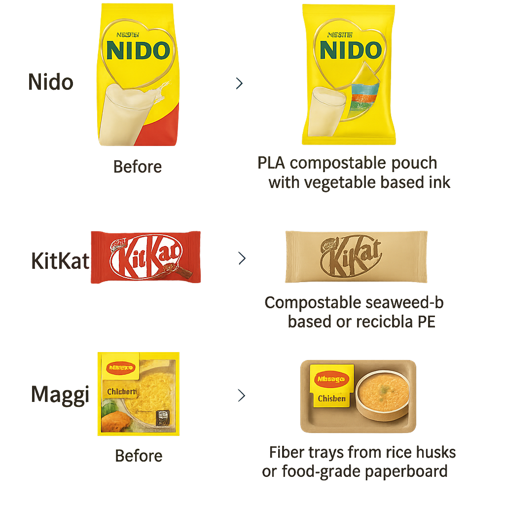

The Plastic Packaging Problem
Too much waste, too little recycling. Nestlé must lead the shift.
Nestlé Objective: To ensure that 100% of its packaging is recyclable or reusable by 2025, while reducing environmental impact and leading innovation in sustainable packaging.
Vision
To transform Nestlé’s packaging into a smart, circular system where waste becomes value, leveraging nature-based materials, digital traceability, and consumer engagement to drive a future where no packaging ends up as pollution.
Pack2Nest
Where Packaging Finds Its Way Home
1. BioBoost Materials
Sustainable packaging made from food waste and bioplastics to reduce emissions.
2. SmartPacks
QR-enabled packs that guide recycling, reward consumers, and generate real-time insights.
3. LoopBack
Return stations collect and compact used packs for recycling or reuse.
Start in the factories – BioBoost Materials
A strategic shift to replace a portion of Nestlé’s packaging with compostable and sustainable materials, made from:
- Food waste side streams (e.g., whey from dairy, cocoa shells, rice husks, seaweed)
- Certified bioplastics like PLA (polylactic acid) and PHA (polyhydroxyalkanoates)
20% of Nestlé’s packaging to PLA may represent an annual investment of $288 million, but it would eliminate over 400,000 tons of CO₂
Why These Materials?
- Bio-based origins: Made from renewable sources like corn, algae, or microbes .
- Compostable: Break down naturally, reducing long-term waste and microplastic pollution.
- Lower fossil dependence: Replace petroleum-based plastics, supporting decarbonization.
- Upcycle side-stream waste: Materials like whey, cocoa shells, or rice husks are repurposed instead of discarded.
- Enables circularity: Packaging returns to nature or becomes raw material again.
- Aligned with Nestlé’s sustainability goals: Supports 100% recyclable/compostable packaging by 2025.
Key Benefits of Switching to Sustainable Packaging
| Category | Benefit | Key Figure |
|---|---|---|
| Environment | Reduces long-term waste | 🌱 Biopackaging degrades in 3–6 months vs. 500+ years for plastics |
| Cuts carbon emissions | 🔻 Switching to PLA reduces CO₂ by ~1.7 tons per ton replaced (EPA, 2023) | |
| Brand Impact | Increases consumer preference | 💚 7 in 10 Gen Z consumers prefer sustainable packaging (McKinsey, 2023) |
| Strengthens market leadership | 🥇 Nestlé is among the Top 10 ESG-ranked food brands globally (S&P, 2023) | |
| Strategic / Financial | Avoids future plastic taxes/fines | 💸 €800 per ton of non-recycled plastic in the EU (EU Green Tax) |
| Enables green financing access | 📈 Up to 10% lower interest rates for ESG-linked loans (Bloomberg, 2022) |
Example of Possible Real Applications
Empowering the Consumer – SmartPack
SmartPack is a digital tool embedded in Nestlé’s packaging. It uses a unique QR code linked to a platform that personalizes recycling instructions for consumers and delivers real-time environmental intelligence to Nestlé.
Experience Flow
For the Consumer:
- Scan the QR code on the package using a smartphone.
- See local recycling instructions based on geolocation.
- Earn rewards for returns or responsible disposal (points, discounts).
- Track personal impact – CO₂ saved, waste avoided, contributions logged.
For Nestlé:
- Collect real-time data by region, product, and user behavior.
- Use AI to analyze patterns in recycling and engagement.
- Get insights and suggestions for redesign, materials, and logistics.
- Integrate data into sustainability reporting and innovation loops.
Estimated IT Cost Breakdown
| Phase | Estimated Cost |
|---|---|
| App Development | $80,000 – $250,000 |
| Annual Maintenance | 15–20% (~$12,000 – $50,000) |
Key Benefits
| For Consumers | For Nestlé |
|---|---|
| Personalized recycling info | Actionable data by SKU, region, and behavior |
| Eco-rewards and gamification | Greater brand engagement and trust |
| Impact visibility = motivation to act | AI-based design and supply chain recommendations |
| Builds a culture of shared responsibility | Supports ESG tracking and innovation cycles |
SmartPack turns every package into a tool for change — one scan at a time.
End of the Chain – LoopBack
LoopBack is Nestlé’s post-consumption packaging recovery system designed to close the circular loop through smart return stations and crushing machines.
How It Works
- Consumers return used packaging to LoopBack stations (e.g., supermarkets, campuses).
- Packaging is compacted on-site with crushing machines (volume reduced up to 80%).
- Nestlé collects and forwards the compacted material to recyclers or composters.
- Recovered material re-enters the packaging supply chain.
Management Strategy
Option A: Strategic Partnerships
- Faster deployment
- Cost-effective operations
- Local adaptability
Option B: In-House Model
- Higher initial investment
- Greater integration and control
Recommended Model: Start with local partnerships in key cities to test and scale, then evolve to a hybrid model combining both strategies.
Key Benefits
On-site volume reduction = lower transport & emissions
Improved material recovery rates
Data insights on consumer participation
Strengthened sustainability leadership & reputation
Risks and Mitigation
Financial
High cost of bio-based materials
Scale gradually, negotiate long-term contracts
Technological
Low QR adoption or app failures
Intuitive UX, clear communication, and tech support
Operational
Complex return and collection logistics
Start with regional pilots and local partners
Scalability & Flexibility
Feasible
Each component (materials, SmartPack, LoopBack) can be rolled out in phases, starting small and scaling up gradually.
Adaptable
Flexible to different market conditions, infrastructure levels, and consumer behaviors.
Scalable
Allows controlled growth—begin with pilot programs, measure results, and expand based on performance.
💻 IT Integration in the Proposal
💡 Digital Innovation
SmartPack digitaliza los empaques con QR y geolocalización para conectar consumidores y sostenibilidad.
🤖 Artificial Intelligence
IA analiza datos de escaneos y comportamiento para optimizar diseño, logística y engagement.
📊 Business Analytics
Dashboards muestran métricas ambientales y de usuario en tiempo real para decisiones basadas en datos.
🔄 IT Supply Chain
LoopBack rastrea el flujo inverso de envases, conectando retorno, reciclaje y trazabilidad digital.
💰 IT Finance
Datos recolectados permiten acceder a incentivos financieros (green loans, ahorro en impuestos).
The Smart Choice for a Circular and Profitable Future
Tackles the entire packaging lifecycle
It’s realistic and scalable
Uses real circular economy principles
Reduces emissions, waste, and costs
Empowers consumers through technology
Strengthens Nestlé’s leadership